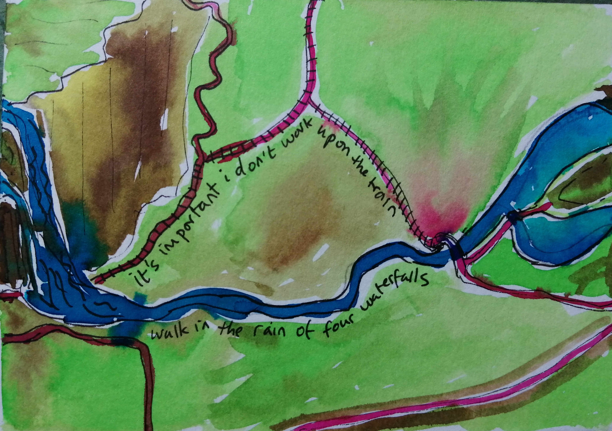
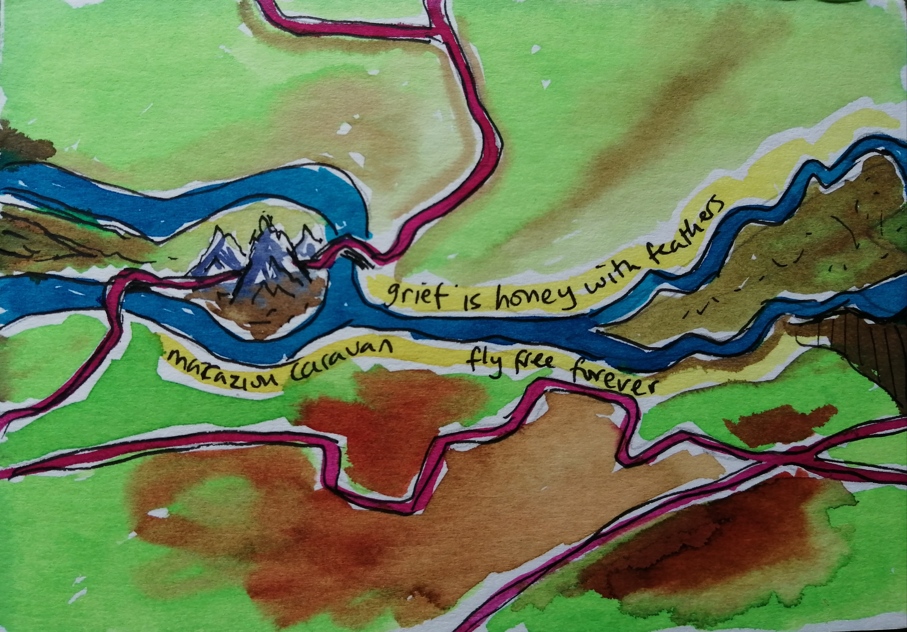
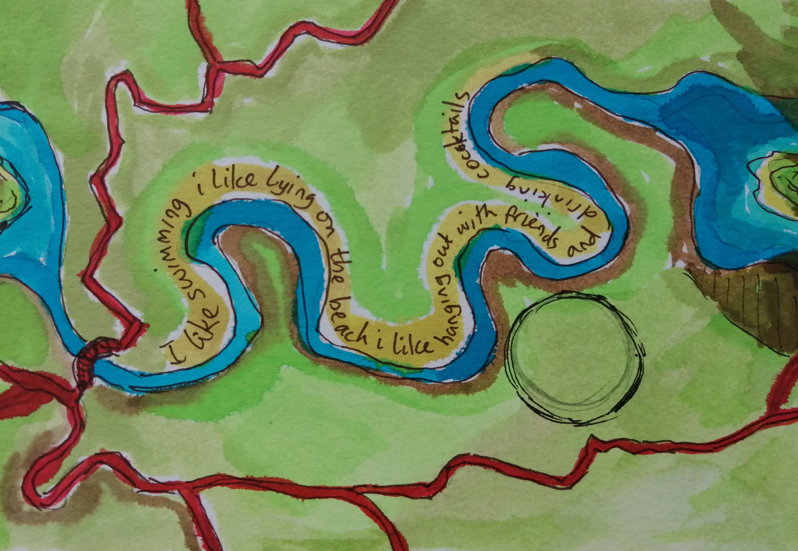

This is a small interactive exercise called a myriorama. It was developed as part of research exploring the potential of ‘third spaces’ – spaces outside home and work – to support wellbeing, connection, and productive mental rest. To find out more about the research, email Karen Gray.
On the next page you will find a series of fragments drawn from interviews and reflections with co-researchers. Choose and arrange up to six fragments to create your own piece.
There is no right order — follow intuition, memory, or feeling.
You can drag tiles, or click them to move them into your composition.
This myriorama and the concept for it was created by artist Kate Green

it is important i don’t work upon the train but walk in the rain of four waterfalls
grief is honey with feathers marazion caravan fly free forever
i like swimming i like lying on the beach i like hanging out with friends and drinking cocktails